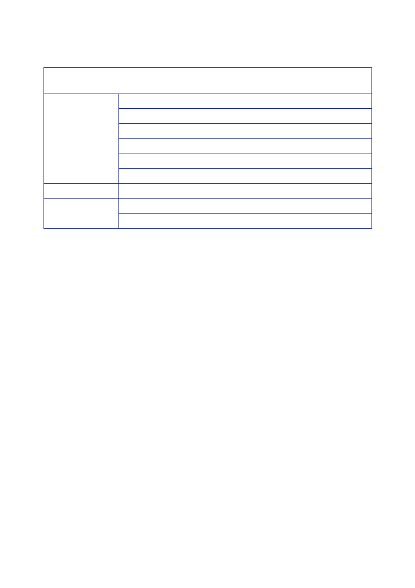

Op TELIC
I
Op TELIC
II
Op TELIC
III
9.7 | May
2008 to October 2009
Time
period
“March/April”
2003
Mid
May
31
May
11
June
25
June
10
July
4
August
17
November
29 March
2004
Number of
UK Service
personnel
deployed
200
The
National Archives, [undated], ‘Operations in Iraq: Facts and
Figures’. The figure includes support
staff
stationed outside Iraq.
201
House of
Commons, Official
Report, 30 April
2003, column 16WS. The figure describes UK Service
Personnel
deployed in the Gulf region.
202
The
National Archives, [undated], ‘Operations in Iraq: Facts and
Figures’. The figure describes UK
military
personnel deployed in Iraq.
203
House of
Commons, Official
Report, 11 June
2003, column 51WS. The figure describes UK servicemen
and women
in the Gulf region.
204
House of
Lords, Official
Report, 25 June
2003, column 307. The figure describes the number of
personnel
in Iraq and Kuwait.
205
Letter
Williams to Rycroft, 10 July 2003, ‘UK Force Levels in Iraq’. The
figure refers to personnel
deployed in
the Gulf region on activities related to Op TELIC.
206
Letter MOD
[junior official] to Rycroft, 4 August 2003, ‘Iraq: Force Level
Review’. The figure describes
the total
deployed strength.
207
Ministry of
Defence, Operations
in Iraq: Lessons for the Future, December
2003. The figure describes
forces “in
theatre” at 17 November 2003.
208
House of
Commons, Official
Report, 29 March
2004, column 1256. The figure refers to Armed Forces
personnel
serving in Iraq.
465